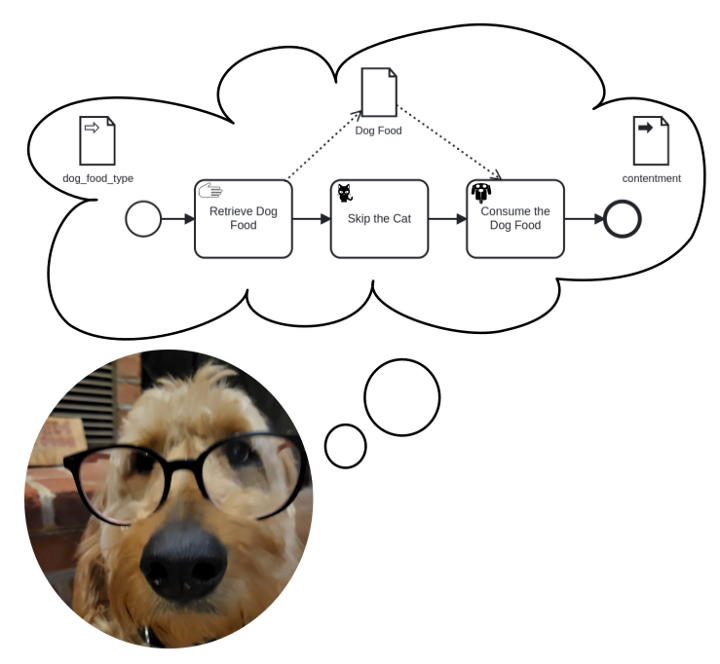
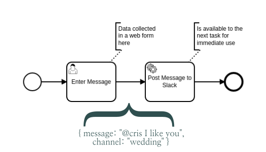
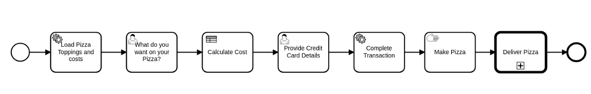
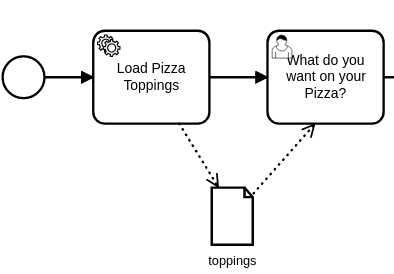
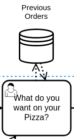
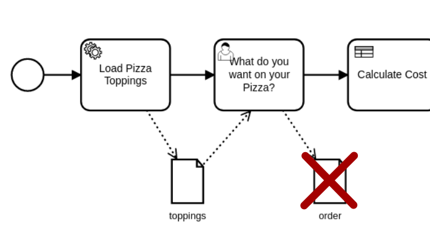
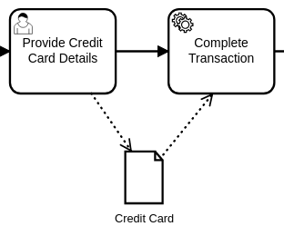
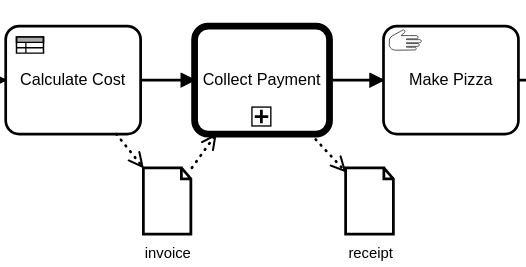
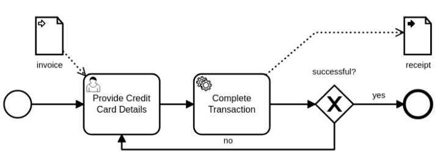

A Simple Default
One of the benefits of both BPMN and Python is they have long low-sloped learning curves. Things are simple by default, but have the ability to grow to meet far more complex situations. As we introduce new concepts into SpiffWorkflow, we want the default behavior to be equally intuitive and powerful.
In SpiffWorkflow, data follows the process flow. Each task receives all data from the previously executed task.

As such, you can expect your web form submission to be available as variables in the following service task. And the variables you create in that task will be available to the next task, and so on.
We call this type of data Task Data, because it belongs to the task. Each task has full control over the information it receives, and can choose to pass the data on unaffected, or make any changes to it, including clearing it out completely.
This is different from how many BPMN-based systems work, but we feel it creates a very intuitive and easy-to-learn system. It has some limitations, particularly as your diagrams become larger and more complex. At this point, BPMN Developers may need more control.
Data Objects
Data Objects are graphical notations that allow BPMN Developers to control which tasks have access to which variables. As we will demonstrate below, this ability has some far-reaching implications, and can become a critical tool as your BPMN structures grow in size and complexity.
Rather than feed you a list of rules, we’ll cover the full definition of these notations in a detailed example later in the article.
But first, we want to introduce you to one more common task with data: transforming it. This is important as you will often need to change the shape of information as you use it for different purposes.
Data Mapping and Transformations
We added the ability to associate Pre-Scripts and Post-Scripts to most task types in the bpmn-js modeler extensions we’ve created. We found our diagrams were getting overloaded with Script Tasks, but they were the fastest and easiest way to munge data, i.e., convert it from one form to another. So now all tasks can execute small scripts if they need to alter the structure of information before it comes in, or as it leaves. Since these are scripts and can contain most any python code, they also open the opportunity to perform assertions — so you can “Fail Fast” (a respected software development idiom that encourages uncovering issues as soon as possible) by checking to see that data is in the right form before attempting to use it.
An Example
In this example, we will model a pizza delivery service that will cover placing the order, selecting the pizza, providing a credit card, and sending the pizza off to the delivery team. In the process, we will describe how SpiffWorkflow can solve the problem using its default behavior, then cover the major benefits of using Data Objects to manage specific situations.

This diagram will work in SpiffWorkflow as is, and each task would gather more information, add it to the Task Data, and then send a new copy of that data on to the next task in the flow. The benefit here is you don’t have to model the data at all. It’s clear where information is coming from, and that it will be available when you need it. The data and the flow are one and the same. The problem is that the Credit Card task would be passed in a list of all 500 available pizza toppings — information it really doesn’t likely need. Worse, the data we provided in credit card details will be passed on to the task for making pizza or sent off in the external call activity, data exposure which is unnecessary and potentially unsafe.
Rule #1: Use Data Objects to reference information that will not change

If we add a BPMN Data Object called “toppings,” and Load Pizza Toppings produces a variable called “toppings,” that variable is now treated as a Data Object in SpiffWorkflow. It is not passed along as a part of the Task Data. It is available for the next task, because we connect it with a Data Association (the dotted arrows). This saves us from holding multiple copies of this data in tasks where it is not relevant. It will make the model far more efficient to store and execute, and it will keep this data out of subsequent tasks that do not need it. Were another task later in the workflow to need to reference the list (say we wanted to display a detailed list of the ingredients in the final order summary), we could just link that task to toppings as well, and there is still only one actual list of toppings stored with the process.
Rule #2: Use Data Stores to persist information

If there is information that should persist beyond the scope of the process, you can use the Data Store to reference it. SpiffWorkflow will provide hooks for making this information available, but it will require some work on the part of the calling application, as Data Stores will be specific to both the implementation (the type of database in use) and the domain (orders here would be connected to the user account, but you might also save information relative to one of many delivery addresses).
Rule #3: Do NOT use Data Objects to track things that are modified along the way

Since almost all of the tasks here will need to deal with the order details, it is helpful NOT to make it a Data Object. It is far better to allow it to pass from task to task as we add additional information to the order. The process will do things like adding the calculated costs, showing that the payment is complete, and determining if the cheap gluttonous jerks bothered to leave any kind of tip for the driver.
Rule #4: Do Use Data Objects to limit access to information

Only two tasks need access to the Credit Card information, and it isn’t something we need or want to keep copying to later tasks. So we can split it off here and isolate access to it.
Rule #5: Data composition should match the model composition

The example above is a good candidate for a Call Activity. In this example, we use Data Objects to share information with the Call Activity, which defines its required parameters with a Data Input, shown below. The Data Input is used here to indicate that an Invoice is required by this Process, and SpiffWorkflow will throw an exception if data by this name is not available. The process below further promises to provide a “receipt” as output.
Here is a quick video showing Data Inputs and Data Outputs in action:

Two Types of Data
I hope these examples were helpful. Just to reiterate, there are two different types of Data in SpiffWorkflow, and they behave slightly differently. Here is an overview of their behavior for reference:
Task Data
Task Data is information that belongs to the TASK. It is most useful within a single process model that does not contain large amounts of information.
- Task Data is thread-safe by nature, as the data follows the Flow (arrows) of the BPMN diagram.
- Task Data is transferred by default. Any variables created by forms, decision tables, and scripts are passed on in the Task Data.
- Task Data behaves like a pipeline architecture. Each task has control over the data and may alter it in any way before passing it on.
- Each completed task in a workflow will retain a copy of the data as it was when the task executed. “Rewinding” to a previously completed task would allow access to the Task Data as it was when the Task was first executed.
- Task Data can be directly referenced by name in script tasks, gateways, forms in user tasks, and decision tables.
Data Objects
Data Objects are information that belongs to the PROCESS. It offers encapsulation as well as control over data from within the BPMN diagram. Data Objects are most useful when decomposing complex diagrams into call activities, referencing a large data set, or protecting sensitive information.
- It is represented and controlled by BPMN Data Objects, Data Inputs, Data Outputs, and Data Stores, which are all visible elements in the BPMN Diagram.
- A Data Object is scoped to the process in which it is defined.
- A Data Object can be used to share data with a Call Activity through Data Inputs and Data Outputs.
- A Data Object is defined by a name, and during execution, a variable by this name is guaranteed to exist for all connected tasks.
- Parallel tasks can share a data object and see changes immediately. This is not true of Task Data.
As Bruno Paré-Simard pointed out in a recent GitHub Issue, we should find ways to Type our Data Objects to assure they meet a certain data structure, or can be mapped to a specific class, and we are considering ways to make this happen while respecting the BPMN standard.
References and Further Reading
The implementation of BPMN Data Objects, Data Inputs, and Data Outputs has, at times, been hotly debated, as you can find in the comments of this article from BPMN expert Bruce Silver: https://www.trisotech.com/bpmn-decoded-data-flow/
We looked at a number of existing BPMN-based products to see how they handled Data, and they took widely divergent approaches. We looked closely at some other BPMN implementations as we formulated our approach.
Camunda avoids the use of BPMN’s Data Objects and prefers its own proprietary method for transferring data between tasks, as they describe in their documentation.
Flowable follows this same trend, evolving away from the BPMN spec and using extension elements to handle the exchange of data.
Trisotech favors using Data Objects for all data, and sticks close to the standard as described in this recent Bruce Silver article: https://methodandstyle.com/executable-bpmn-vs-method-and-style/
In our opinion, these all seem to create difficult interfaces for Citizen Developers (folks from other domains that have picked up programming skills along the way) — and we are hoping that our approach makes it a little easier for people to develop BPMN diagrams without having to understand everything from the very beginning.